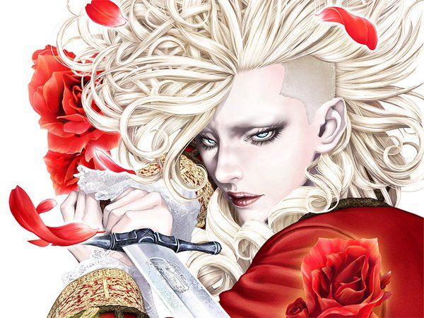
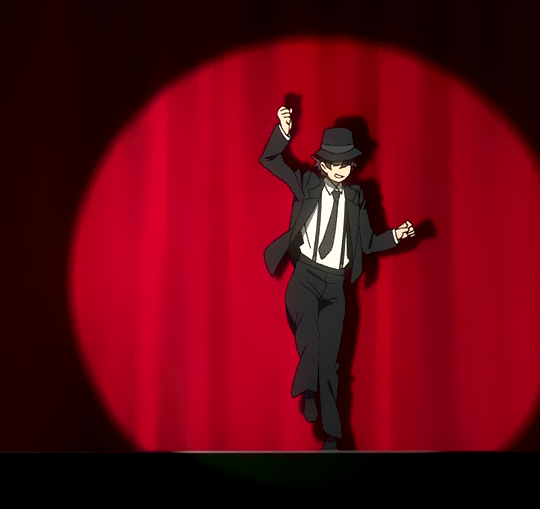
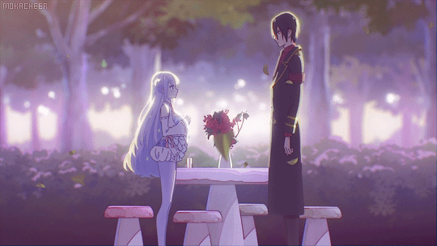
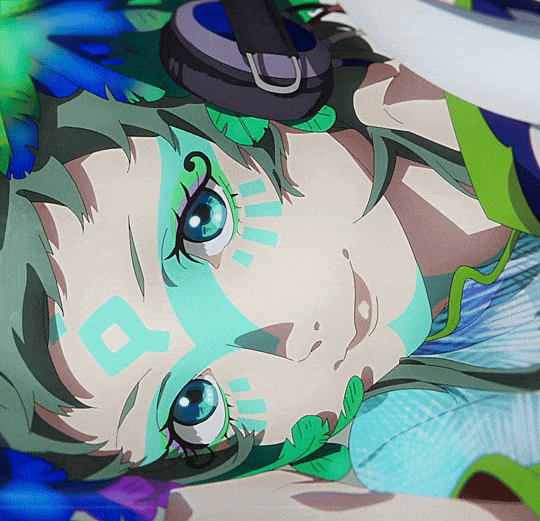
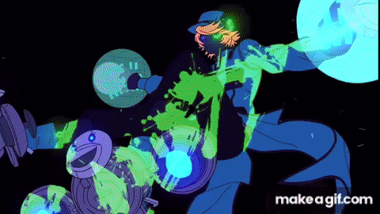
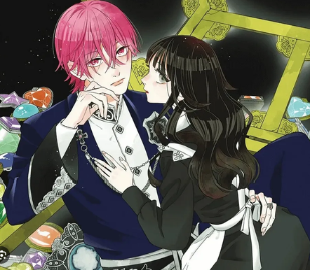
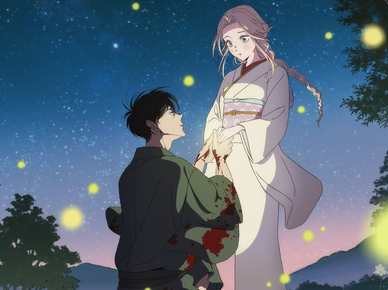

Tiny, round creatures deal with jobs, money and monsters in everyday life, and stay
cheerful through all of it.
Manga & anime ✿
꒰১ one more volume ໒꒱

Set in France at the start of the Revolution, the story follows the Sanson family,
the royal executioners. Charles-Henri tries to protect the family's legacy, while his
younger sister Marie-Joseph lives freely at Versailles. When her first love Alain is
killed, she sets out to take revenge on his killer and on the unjust system behind
his death. Innocent Rouge is a manga, the sequel to Innocent.
Innocent Rouge

A gate to another world opens over New York and the city becomes Hellsalem's Lot.
A young photographer with special eyes joins a secret group that keeps the peace.
Blood Blockade Battlefront

An evil army invades Earth, and its lieutenant Shun Miller is sent to terrorize a
city protected by the magical girl Byakuya Mimori. Instead, he falls for her at
first sight and starts showering her with gifts. Then he finds out that her
familiar, Angel, has been manipulating her, so he decides to help her live a
happier life. A comedy romance between two people on opposite sides of a war.
The Magical Girl and the Evil Lieutenant Used to Be Archenemies

Gnosia is a sci-fi psychological thriller where a spaceship crew is trapped in a deadly time loop.
Among them are "Gnosia": shapeshifting aliens pretending to be human to eliminate the crew. To survive,
the passengers must debate and vote to put suspects into cryogenic sleep. The main characters must use each loop to uncover everyone's secrets and find a way
to break the cycle.
Gnosia

Akudama Drive is a high-octane cyberpunk thriller set in a dystopian, neon-lit Japan.
An ordinary young woman accidentally gets caught up with a group of elite, highly dangerous criminals known as "Akudama".
Forced to fake being a master criminal named "Swindler" to survive, she joins them on a chaotic,
explosive heist to rescue a death-row inmate and infiltrate a heavily guarded bullet train
Akudama Drive

In a fantasy world, rare individuals known as "Jewels" possess magical eyes made of gemstones.
They live secluded in a grand palace called the Jewelry Box, granting wishes to humans. The story follows Uni,
a girl with unique iron-rust eyes, and Aleclaire, a feared man known as the "Jewel Killer,"
as they team up to uncover the dark and dangerous secrets hidden within the palace walls.
Tetsu Sabi to 1000 Carat

Firefly Wedding is a dark historical romance set in the Meiji era. It follows Satoko, a nobleman's daughter with a terminal illness, who is targeted by assassins.
To save her life, she makes a desperate proposal to her deadly attacker, Shinpei: marry her, and her family will pay him handsomely.
Firefly Wedding
Nothing found. Try another word or genre.